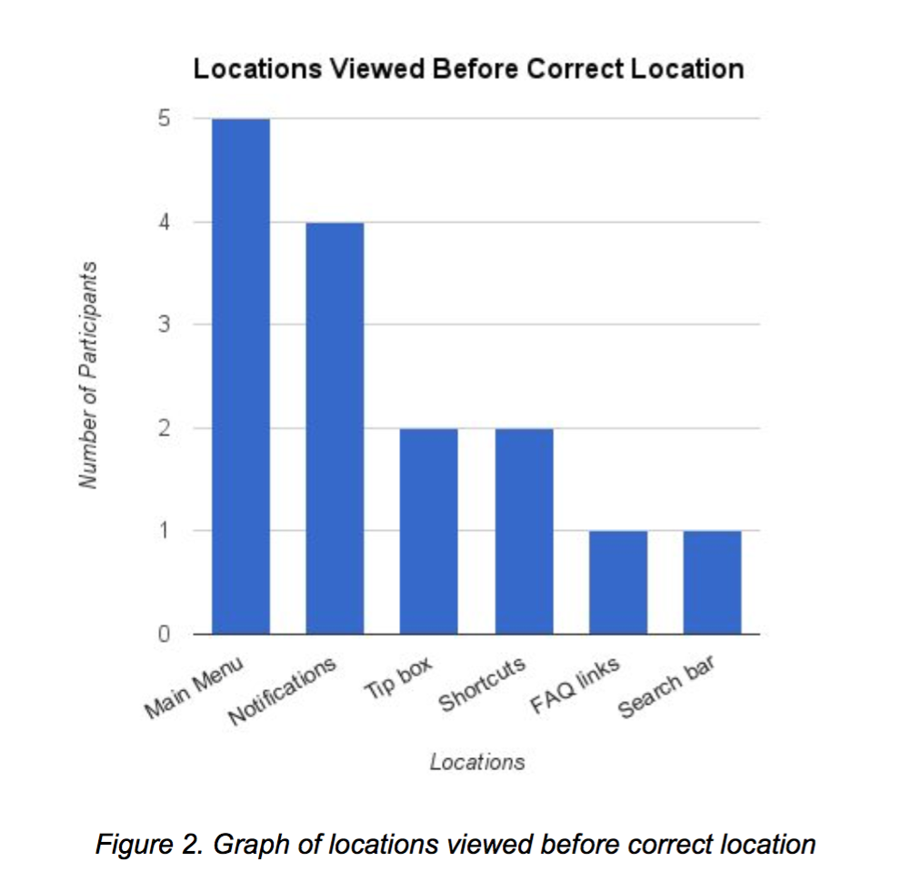
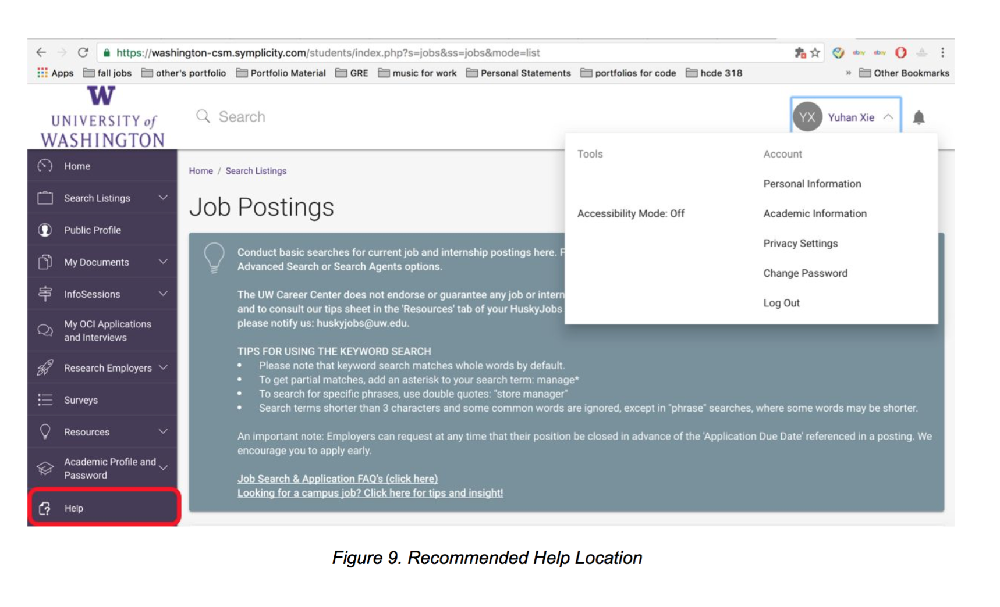

Overview
In Autumn 2016, me and another three college students in University of Washington teamed up to seek to enhance the user experience of HuskyJobs through a series of usability testing.
Our research consisted of us conducting heuristic evaluation to accumulate questions we would like answered. From there we recruited potential user of this website as participants for several usability tests. Our findings show the pain points of HuskyJobs, and on the basis of these findings, we recommend that HuskyJobs implement our suggested changes in order to improve usability and user experience.
The product
HuskyJobs is an interactive system for recruiters to post information about opening positions and for students who intend to apply to jobs that are posted. We chose this project because students have voiced concerns for the site in the past and a poor HuskyJobs interface means students are missing out on internships or jobs that could have led to further opportunities in the future.
Methods
As I developed the method details for our usability study, I attempted to base all details off of our overarching research question: What is preventing users from using HuskyJobs more often to find and apply for jobs? This question drove all aspects of our usability test.
In order to test our targeted heuristics, we created four tasks for users to complete. We asked participants to use think-aloud protocol while performing each task to collect qualitative data on their experience.
The following provides the scenarios given to participants and discusses the reasoning behind each task scenario.
Task 1: Starting from HuskyJobs’ landing page, login and navigate to the job search page.
Scenario: You’re currently a junior in the Computer Science department. Spring quarter is coming to a close and you’re interested in finding an internship for the summer. Use Huskyjobs to find a software development internship at the D.E. Shaw Group
What it tests: Used to test the login system and if users can distinguish between current student login and alumni login, and general navigation of the main menu.
Reasoning: The primary goal of this task is to evaluate how users were responding to the current login screen. In our heuristic evaluation, we found that there were inconsistencies between the two login processes with current students using a redirecting link to login and alumni using a username and password text box. This task evaluates whether or not the current student login design is adequately communicated to the users.
Task 2: Starting from the home page, upload a resume and a cover letter to your profile.
Scenario: You’ve found a job that you are interested in. Upload your resume and cover letter so you can submit them to an employer.
What it tests: 1) Clarity of difference between public profile and uploading a document. 2) Navigation to upload documents page, as well as other shortcut routes to accomplish this task.
Reasoning: We included this task to test the general usability of this site, as well as the overall aesthetic and minimalist design problem we discovered from our heuristic evaluations. Uploading documents is a critical step in successfully applying for a job, and we wanted to test participants on how easy and intuitive accomplishing this task would be. To assess the site-wide aesthetic and minimalist design problem, we felt the upload document page would be a strong testing point.
Task 3: Starting from the home page, find the HuskyJobs’ help information on searching for jobs.
Scenario: You’ve uploaded your resume and you’re wondering if any employers have viewed it. Find some information on HuskyJobs that will answer this question.
What it tests: 1. The findability of the help information offered. 2. Structure and organization of the help information (offering different help information depending on the page accessed).
Reasoning: We found that the help and documentation heuristic of HuskyJobs was very unsatisfactory. Users could not access help unless they checked for a submenu under their profile. This task tests whether users find the current location of help is intuitive and easily accessible. Additionally, we wanted to test whether or not it was clear to users that the help page offered different information depending on what page they clicked on help from.
Task 4: Starting from the Home page, already logged in, find an employer-led event.
Scenario: You’ve heard your friends talking about a company, Washington Society of CPAS and you want to learn more about it. Find an event that will connect you to this company and sign up for it.
What it tests: 1. The findability of employer-led info sessions and events. 2. Navigation to info sessions
Reasoning: We found employer-led events may be difficult to find because of ambiguity in the wording of information sessions and search listings. Search listings suggests that you can search for info sessions and events, which is not the case. Search listings only provides current job openings and internships and this task evaluates whether or not users would understand this.
Participants
Audience Analysis
We analyzed the sites purpose and functionality in order to get a better understanding of the target users. We decided to narrow the scope of our study to focus specifically on those who are applying for jobs, as opposed to the recruiters or employers posting them. Only current University of Washington students and alumni have access to HuskyJobs. We came to believe that a typical user uses the site sporadically. They may not use the site for months, but when searching for a job they may visit the site multiple times a day.
Participant Criteria
Because we are focusing this usability test on several specific features on HuskyJobs, we created participant criteria that would allow us to best evaluate these areas. We decided to recruit five participants who are all current University of Washington students and have never applied to a job using HuskyJobs.
We conducted 5 usability sessions where all of our participants were college students who currently attend the University of Washington. They were all female and between the ages of 17 - 20. 2 participants had never used any job searching tools, and 3 participants had used LinkedIn. Refer to Appendix C for full survey. Recruitment was conducted through posting the survey on Facebook student pages and randomly asking students in various campus buildings to participate. Each candidate fit our required criteria to conduct the study, some were familiar with the site while others had never logged on before.
Process
Prior to each session, we printed out the forms required to complete the usability study. For each test, the participant needed to fill out a consent form, post-task questionnaires, and a post-test questionnaire.
Developed Research Questions
After analyzing HuskyJobs’ target users and key tasks required to successfully accomplish using the website, we developed the following overarching research question that would guide our usability study: What is preventing users from using HuskyJobs more often to find and apply for jobs?
In order to address this problem, we came up with several more focused usability questions. These questions would allow us to better understand the different components that influence the overall usability of the site. They are as follows:
- Do users understand the different application processes such as applying through
- HuskyJobs vs. being redirected to an external site?
- Is uploading documents to your profile efficient, easy, and effective?
- Can users find answers to their questions in the help easily?
- Are users confident that they’re submitting the correct documents when applying to specific jobs?
- Is the login interface intuitive?
- Can users easily navigate through different tools after logging in?
- How do users feel about the info sessions RSVP process?
Pilot Test
In order to prepare for our usability tests, we conducted a single pilot to get a sense of how the test would go. The purpose of the pilot was to see if we overlooked any matters that may disrupt our tests with actual participants. It also allowed us to evaluate how users would interpret our tasks in the context of a testing environment. After conducting the pilot session, we realized that some portions of the wording of tasks were unclear. This allowed us to improve our scenarios and collect more accurate data.
Data Collected
Over the course of these sessions, we collected both qualitative and quantitative data. We collected qualitative data by asking the user to follow “think-aloud” protocol, as well as our team members taking notes on how the participant went through each task. After each task was completed, our team members may have asked additional questions depending on observed behaviors and activity during the task. Our quantitative data was collected using the Likert scale on our post-task and post-test questionnaires. Below is an example of the format of our post-task and post-test questionnaires. For further documentation, see Appendix C.

Results
Data Compilation
The team compiled the data collected from each usability study in a Google Doc. We grouped all data by participant and then by task. The team went through each task and summarized the participant’s process while completing the scenario. This included pages they accessed, icons they viewed, steps they took to complete the tasks, and any other relevant information. Quotes and questionnaire responses were placed under the task they were relevant to. We then had a data set for each participant that we could use later for data analysis.
Task Results
In this section, we present the results of our research. For each task we conducted, we present the most important and relevant data acquired.
Task 1: Login and navigate to the job search page.
Before starting this task, we told participants to begin their think aloud protocol after logging into HuskyJobs. This allowed us to collect quantitative data on the time spent looking for the current student login link without think aloud protocol affecting this measure. The longest amount of time spent before finding the correct link was 3 minutes and 7 seconds, while the shortest was 4 seconds. Excluding the outlier case, the average time spent finding the current student login link was 9.75 seconds ([12, 15, 8, 4] / 4).
2 out of the 5 participants interacted with the alumni login boxes. One participant started typing in the alumni username box, before stopping and clicking on the current student login link. The other participant attempted to login as an alumni three times. After the third failed attempt, she spent 15 seconds reading the login screen text before clicking on the current students login link.
Once users had logged in, 4 out of the 5 participants used the search listings tab on the main menu to search for the directed internship. Of these 4 participants, only 1 of them read through any of the text in the large blue box at the top of the screen outlined in red in Figure 1. All other participants immediately scrolled past the box without reading it.

Task 2: Upload a resume and a cover letter to your profile.
3 of 5 participants interacted with the large blue box of text on the My Documents page. Upon seeing the box, one participant said they found it “alarming” and “did not want to read it” while another participant simply said “Do I really want to read all of these?..” before skimming through the content. The 2 participants who did not interact with the blue box simply scrolled past it without acknowledging or reading it.
2 of the 5 participants expressed verbally that they expected to be able to upload two documents at once. After selecting a file to upload, one participant did not submit immediately. They stated “can I choose another file at once? I think it says only one at a time, I would have preferred multiple files at once” before clicking the submit button. While selecting the document to upload, one user tried selecting multiple files and explained how she thought she could upload them at the same time.
2 of the 5 participants also expected some form of confirmation following the document upload. After submitting the document, one of the participants was confused on whether or not it went through and scrolled down back down to see that her resume was actually uploaded. The other participant stated “expected some kind of confirmation that her file was uploaded.”
Task 3 - Find HuskyJobs' help information on searching for jobs.
We found that 5 out of 5 participants failed to complete this task. All participants eventually found a help page, but were unable to find the desired content. The graph below illustrates locations that the participants went to before correctly finding the help link.
All participants viewed at least one incorrect location before correctly navigating to the help link. 4 of the 5 participants checked the main menu first, while the other participant used the search bar located in the menu header. Following this task, we asked participants to complete a Likert-based questionnaire using the following statements:
This task was easy to complete
Navigation for this task was intuitive
The scale ranged from strongly disagree to strongly agree. We assigned a 5 point range to this scale, with 1 representing strongly disagree and 5 representing strongly agree. All 5 participants said they strongly disagreed that the task was easy to complete. 4 participants strongly disagreed that the task was intuitive while one participant said they agreed. On average, participants found that the intuitiveness of navigation for this task was 1.6 , or in between strongly disagree and disagree.

Additionally, we found that 4 out of 5 participants verbally expressed dissatisfaction or frustration regarding the task. Several of the participant’s statements are as follows:
“I mean, put the help in a really clean spot, and if you want to stay this way, it needs to say this is not ALL of the help, you can get more, click this link” (P1)
“Help isn’t specific to me, so why is under my name?” (P2)
“Now I’m frustrated.” (P3)
“Why do I have to click on my name to see the help menu?” (P4)
Task 4: Already logged in, find and RSVP for an employer-led event.
4 out of 5 participants were unclear if they had RSVP’d after they had successfully done so. Two participants expressed this verbally, saying “I think I RSVP’d?..” and “I think I’m finished [with the task]?.. I don’t like that it didn’t say you RSVP’d.” The other two participants RSVP’d but then returned to info session page and checked where the “RSVP” had previously been for confirmation. Once they saw the “cancel RSVP” button they were confident that they had completed the task.
We found that 3 out of 5 participants believed that info sessions would be listed or connected to company profiles. These participants attempted to look for the info session by finding the employer’s page. 2 of these participants did this by navigating to the employer directory while the other participant searched for the company using the home page’s search bar. After arriving at the employer profile, they realized they could not actually get to the event. 1 participant said “this page has information about [the info session], but is not an event” and began looking through the menus for other options.
2 out of 5 participants tried finding the info session under the “search listings” page, not realizing that search listings only pertains to jobs and internships. After users finished the task, we gave the participants the post-task questionnaire. We received the following responses to “The task was easy to complete,” and “Navigation for this task was intuitive.”
It should be noted that participant 5 stated they felt like they only gave their responses (strongly agree to both) because they had "clicked on [the info sessions page] in previous tasks of the test.” By assigning the same 5 digit value to the Likert scale we discussed in task 3, we get an average of 3.4 ([1+4+3+4+5] / 5) for easy participants felt completing the task was, and 3.0 if we exclude participant 5 from our data set. For how intuitive navigation was, we get an average of 3.2 ([2+5+2+2+5] / 5) and 2.75 if we exclude participant 5.
Findings and Recommendations
In this section, we present our findings and recommendations based off our observations and analysis. For each observation, we included a level of severity and scope to demonstrate the priority of the issue. Refer to Appendix A for further information regarding severity and scope.
Lack of Confirmation
Severity: Level 3
Scope: Robust
One recurrent issue among HuskyJobs was the system not giving user’s confirmation on actions they performed. While RSVP’ing for an info session, 4 out of 5 participants had confusion whether or not they had successfully RSVP’d (after correctly doing so). After they had RSVP’d, HuskyJobs takes the user to the general info sessions page. Two participants voiced their confusion by saying “I think I RSVP’d?..” and “I think I’m finished [with the task]... I don’t like that it didn’t say you RSVP’d.” There is no visual feedback or confirmation suggesting that it went through. 2 of the 4 participants had to navigate back to the info session to check for confirmation themselves.
The blue boxes of text (see figure below) found on various HuskyJobs pages also contributed to confirmation confusion. After submitting a document, the page reloads and the first thing the user sees is a large blue box with a vast amount of text. 3 out of 5 users interacted with the blue box believing that it pertained to them actually uploading the document (which it does not). All 3 participants were unsure if the blue box of text acted as a confirmation of uploading their documents and were put off by the quantity of text offered, “Do I really want to read all of these?..” Another user expressed how she “expected some kind of confirmation that her file was uploaded” after realizing the blue boxes were unrelated to the document upload process.
RecommendationsUsers need a clear indication that their action has been successfully received by HuskyJobs. To provide this, we suggest using using pop-up windows informing the user that their document has been submitted or their RSVP for an info session was received. We also recommend keeping users on the same page that they were on while performing the task. Redirecting users to the info session search page after RSVP’ing for a specific event was a source of confusion. Providing dialogue boxes that clearly indicate confirmation of actions and maintaining user page location are two recommendations that we believe addresses HuskyJobs current issues surrounding system confirmation.
Logging In
Severity: Level 4
Scope: Robust
While all users were able to complete the task and successfully login, there were still issues present regarding how current students log into HuskyJobs. Participants spent on average 9.75 seconds looking at the login screen before finding the current students login link. This is a substantial amount of time just figuring out how to login. This may be attributed to inconsistencies with how current students login versus how alumni login. Current students must click a link to be redirected to MyUW to sign in, while alumni use traditional username and password login boxes to sign in.
2 of 5 participants interacted with these alumni login boxes. 1 participant (whose time spent logging in was omitted from the average) logged in using the alumni section three times. After the third attempt, they looked through the login page for 15 seconds before finding the current students link. In the post-test interview, they explained they “had trouble with the login part... There was a link, why does this link exist, make it bigger!” The other participant clicked on the alumni section and began typing before stopping themselves and clicking the correct current student link.
RecommendationsWe suggest that HuskyJobs use a consistent design among current students and alumni so users aren’t drawn to one over the other. Using the same styled login boxes for current students would avoid drawing the the user’s attention to the alumni section. Consistency of login boxes would also put more of a focus on the headers above them (“Current UW Students” vs. “UW Alumni) so that users would be more inclined to notice two distinct logins and use the correct one.
Additionally, the login page could greatly benefit from improving the information hierarchy design. Using more space between sections, larger fonts for headers, and contrasting colors would all be ways to improve hierarchy and better direct users to relevant sections.
Finding Help
Severity: Level 1
Scope: Minor
When participants were asked to locate help information on how employers viewed their profile, 5 out of 5 participants failed the task. There were two main factors we identified that influenced this failure: users found it difficult to find the help link and users were unclear that help content was dependent on the page they were currently on.
Participants did not expect the help link to be listed under their name. 4 out of the 5 participants first checked the main menu to find the help. Once they did not find it there, many of them explored shortcuts links, notifications, FAQ links, etc. until eventually finding it listed under their name. Only 2 of the 5 users noticed the tip box on the bottom right of the home page telling the user where they can find help (see figure 6). Both of these participants tried clicking this box of text (which opens an email dialogue box) before looking to the top right of the page. They both then checked the notifications icon before clicking their name and finding help, which indicates that the tip box is not clear enough in directing users to help. Additionally, 4 out of the 5 participants strongly disagreeing that the navigation for finding help was intuitive. One participant questioned why the help link was under their name, saying “[the help page] isn’t specific to me, so why is it under my name?” These results strongly suggest that finding help is difficult for users and not placed in an ideal location that they would expect.
The other component contributing to finding help issues is how HuskyJobs offers different help content depending on what page the user is accessing it on. Despite 5 out of 5 users eventually finding the help link, 0 of them were able to complete the task of finding employer related information. This was because they did not realize there was additional help information other than what was displayed by a help page they accessed from the home page. The figure below shows how the help content differs from page to page.

The help pages do not visually inform the user there is additional help available. Once they had checked the content of a single help page, did not return to it because they did not expect it to change. After failing the task, one participant expressed how she was “super frustrated” and stated “you guys have to change this” after we explained how the help pages work. Page dependent help information and unintuitive findability of the help link are major issues users may have when trying to find help on HuskyJobs.
RecommendationsThere are two improvements that could be made that we believe would greatly improve the finding help process: Moving the help link and implementing a help menu.
Moving the help link from under the user’s profile to the main menu would make it much more apparent and easier to find. Since the majority of users (4 out of 5) first checked the main menu for help, this would be the most intuitive location to place it. Placing help on the menu and giving it an icon would further improve its findability as users would be able to look for a universal symbol to get help. The figure below offers one way of moving the help link to the menu.
Implementing a help menu on help pages would address the issue of users not understanding or realizing there is additional help information. Using a menu to separate help information by category would allow the user to see the types of help information offered and allow them to easily access it without having to navigate through various HuskyJobs pages. The menu could be done in many ways, but as long as it is clear and simple for the user to get to find other help content, we believe it will improve the help page’s usability.
Finding Events
Severity: Level 4
Scope: Minor
When given a scenario to find a specific info session, 3 out of the 5 participants believed that the info sessions would be connected to the employer’s profile. 2 of these participants found the employer profile by navigating to the employer directory, while the last participant used the home page search bar. Once the 3 participants found the employer’s profile page, they all explored the tabs (such as overview and available positions) looking for the info session, with one participant stating “there should be a clear link that says ‘events’ on this page.” After not finding any way to access or RSVP to the info session, 2 of the participants then found the info session link on the menu and successfully located the info session event. The 3rd and 4th participants used the search listings page to search for the event, unclear that search listings only pertained to jobs and internships.
When asked how intuitive participants thought the navigation for finding an info session was, the average response was a 2.75. This is just outside neutral and leans towards disagreeing with its intuitiveness.
RecommendationsWhen asked to sign up for an event, several of the participants first attempted to find the event by using the “Search listings” or the employer’s page, as opposed to under the info sessions tab. There are two improvements that could be made to address this confusion: listing the info sessions under employer profiles and removing word choice ambiguity of “search listings.”
In addition to listing events under the info session tab, connecting events to employer profiles would give users another path for accessing this information. As of now, the employer profile pages list an overview of the company, with several sections for industry, positions, and other relevant information. By creating a section for events, users could find info sessions where participants most often expected to see them. This would not only respond to participant wants, but also create greater awareness for existing events.
We also found that the “search listings” label did not effectively communicate what the user could and could not find. Several participants felt that events could also fall under the term “listings.” Since search listings only gives the user job and internship results, and not info sessions, this wording was very ambiguous. To address this problem, we propose a more specific label that leaves no room for misinterpretation. For instance, “Search Jobs & Internships” would more clearly inform the user of intended results.
Conclusion
HuskyJobs is an excellent resource for both students and alumni, and by incorporating the results of this usability study, it has the potential to be an even more valuable resource. We recommend that HuskyJobs implement our suggested changes to improve the usability and user experience of the website’s design. Based on our findings and recommendations, this could be accomplished by redesigning the login page, providing clear confirmation after uploading documents and RSVP’ing to events, changing the findability and structure of the help section, removing the ambiguity from “search listings,” and connecting events to employer profiles.